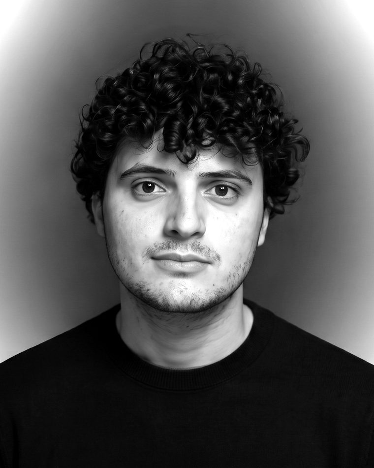

I make the direct channel cheaper than the middleman.
Growth and lifecycle marketing for travel and hospitality. Milan, moving to Dublin.
Available 1 November 2026 · EU citizen Hotel Waldorfproperty film5.6MCammelaComedy Week
Hotel Waldorfproperty film5.6MCammelaComedy Week Litoraneo Suitefull video service
Litoraneo Suitefull video service La Settimahotel restaurant
La Settimahotel restaurantCase studies
3 of 4 publishedComedy Week
A comedy programme across 13 hotels. Tracking it video by video showed that 5 of 43 videos carried 63% of the reach, that two creators produced 70% of it, and that the act with the worst debut became the best performer.
Kolms Creative
Selling content projects to luxury hotels: cold outreach, pricing and account management, with an honest account of why the close rate stayed low in a market that buys on reputation.
Italy Food PRN
A regional food publisher grown from zero by finding the formats that reached new people and rebuilding how they were produced.
In preparation: Azzurro ads. Ask me about them.
About
Milan → DublinI started in marketing for Italian hospitality, where the enemy is not a competitor but a commission: every booking that arrives through a platform costs the hotel 15 to 20 percent. Three years at a 13-property group went into building the channel that avoids it: paid social, brand search, email reactivation, and a comedy programme that reached 32.8 million people without a euro of paid amplification.
Alongside that I ran the commercial side of a small content studio, which is where I learned what a marketer rarely gets to learn: how it feels to price your own work, send the proposal, and watch it go unanswered.
I am moving to Dublin in November for the kind of company where lifecycle and growth are a job, not a side of someone else's. EU citizen, so no visa or sponsorship is involved.

How I work
- Start from the metric that is actually broken, with its starting value.
- Write the hypothesis down before acting: changing X to Y will move Z, because…
- Keep a holdout, even a small one, so the result means something.
- Report what did not work with the same detail as what did.
Background
MSc Digital Content Management, Università Cattolica, Milan · BA Fine Arts, Accademia di Belle Arti, Cuneo · Italian (native), English (professional) · Meta Ads, Google Ads, GA4, MailUp, Excel